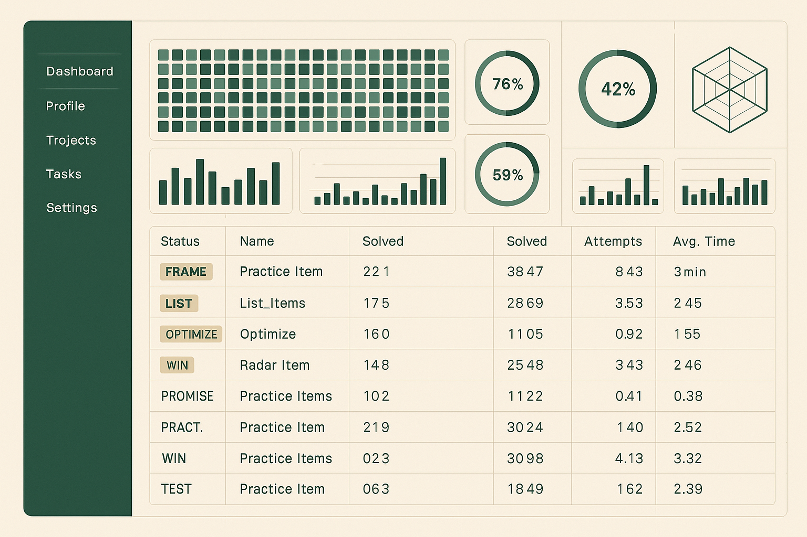
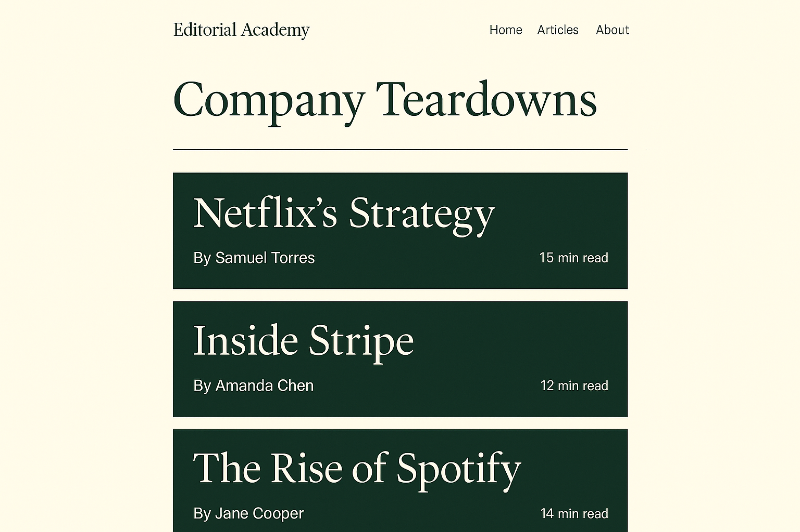
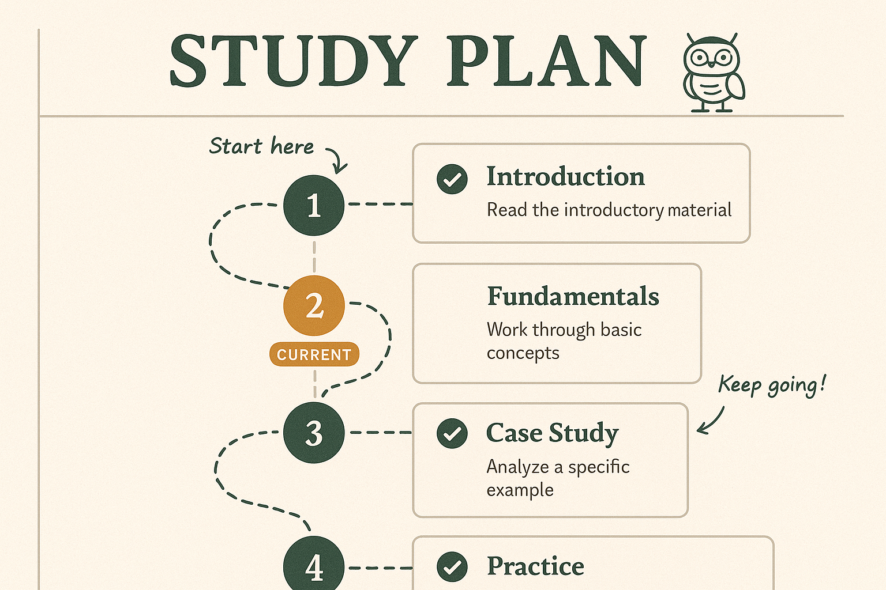
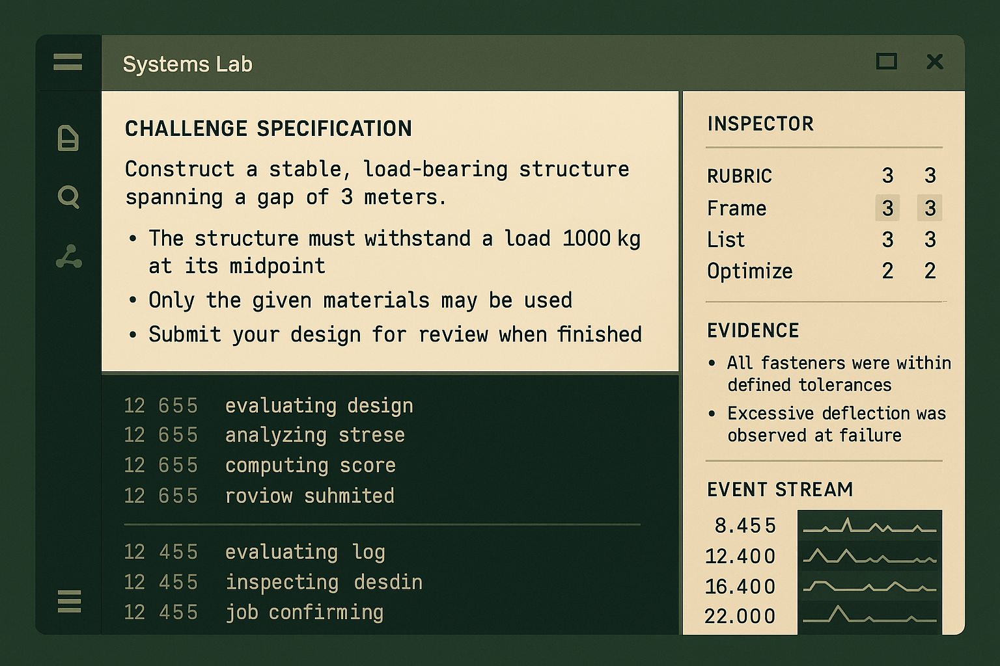

The rich dashboard concept
Readiness bar + coach-programmed session + curated feed + "Why this" on every itemOpen live ↗
Same forest/cream/amber palette and Literata + Nunito Sans pairing, same restructured IA (see the audit), four distinct systems. Each direction has a dashboard, a Library, and a marketing page — click any frame to open it live. The dashboard is the rich "Daily Flight Plan + Cockpit + Feed" concept (below), rendered in each direction's chrome.
A calm technical cockpit. Left sidebar, 6px panels, monospace numerals, green reserved for status/progress, heatmaps and rings. Signature: instrumentation rails — slim left-edge status bars.

Product judgment taught through case studies. Literata display type, dark forest heroes over cream reading surfaces, bylines, editorial infographics. Signature: case-file covers — autopsies as premium magazine covers.

A warm, guided practice environment — Brilliant for adults. Paper-grain cream, curriculum-map sidebar, trail markers and completion stamps, one disciplined Hatch presence. Signature: margin notes — slim annotated callouts (the "§" pins).

An engineering-grade practice lab where interviews, analytics, code, and product judgment converge. Split-pane workspace, heavy monospace, code-style panel headers, event streams — leans into the Claude Code Analytics differentiator. Signature: the inspector panel.
